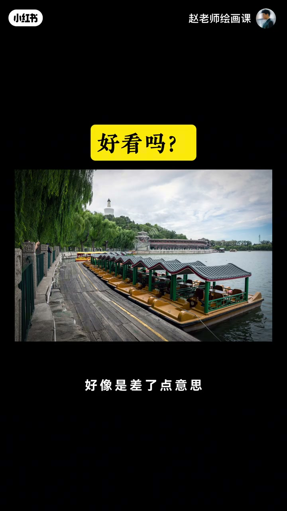
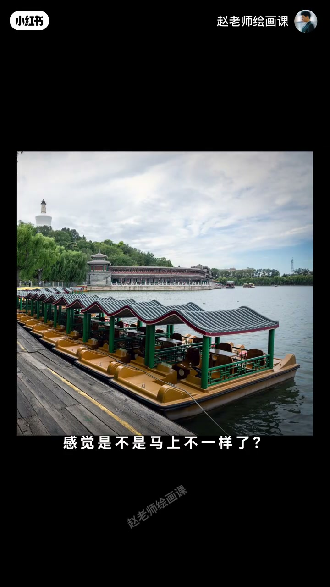
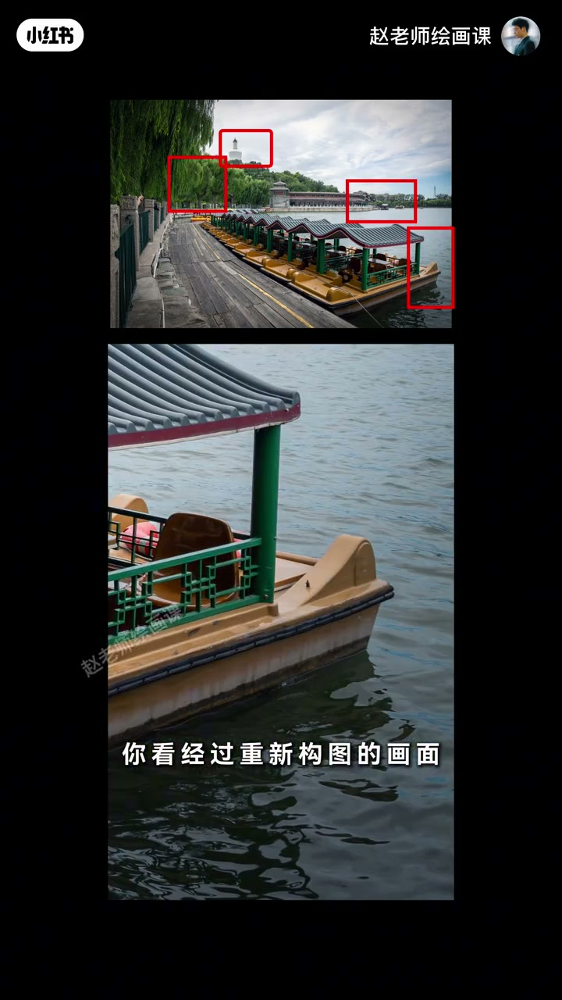
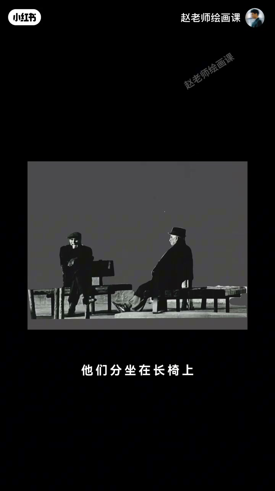
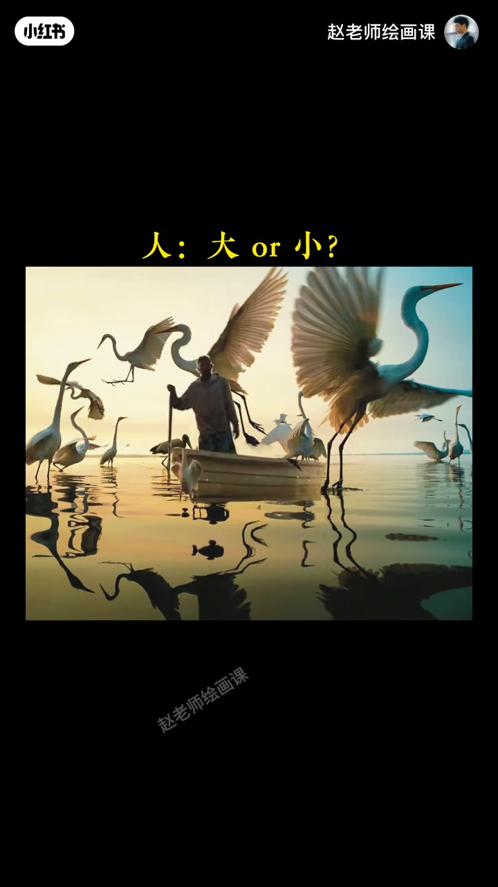
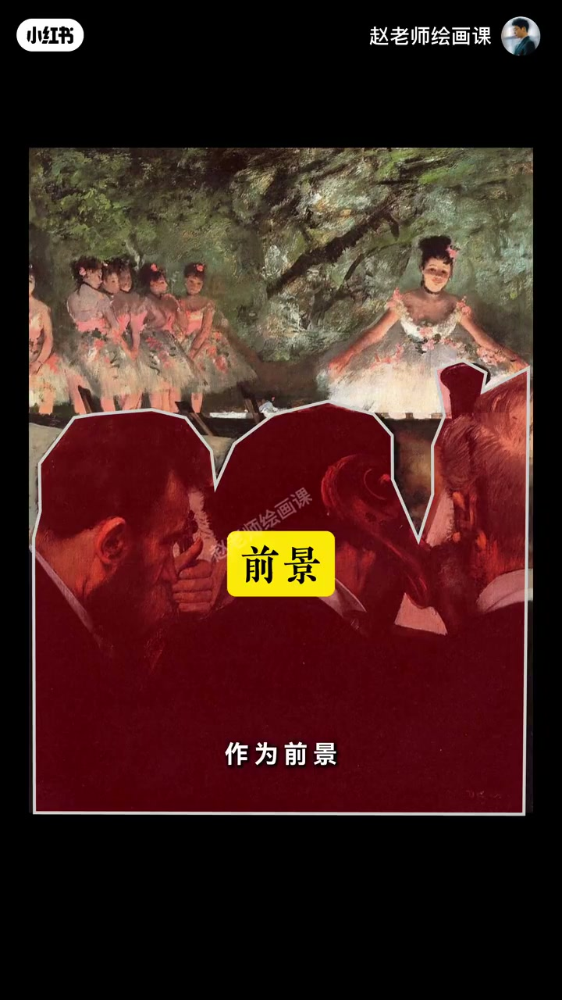

内容要点
赵吾象构成课短片：学了很多构图技巧仍拍不好，往往因为画面缺少绝对主角——北海游船有引导线却不知所云，裁掉干扰后船立刻成为主体。顺序必须是「先确定我想说什么，再匹配构图」，不可颠倒；长椅暮年、人鸟和谐、德加乐池前景（参与者视角）都说明技巧是结果不是出发点。
知识结构
引导线仍不知所云；裁干扰；多裁切练习。
长椅苍茫；人小鸟围＝和谐；包围构图是结果。
德加乐池前景；技巧只是手段；课宣收束。
构图技巧永远只是手段；独特视角与感受优先，先定主题再选技巧，顺序不能颠倒。
00:00-01:32北海船：缺绝对主角，先裁切再谈技巧
开场提问：为什么学了很多构图技巧仍拍不好？先别急着答，看一张风景——认真用了引导线，却「差了点意思」。原因很简单：画面缺少绝对主角。一排船突出、柳树生动、左侧路面引导线抢眼，视线被带走后却不知道该看什么，整幅不知所云。
对策：大胆裁掉左边干扰。船立刻成为毫无争议的主体，其余变陪衬，主次分明就舒服。再用同一张多做裁切练习，重新构图后每张都更清晰好看。关键口令：先确定我想说什么，再匹配最合适的构图方法，顺序千万不能颠倒。00:20／00:54／01:16 证据链。



01:32-03:20先定「想说什么」：暮年长椅与人鸟和谐
街边一对老人分坐长椅望向远方，像回望一生——你被暮年深沉与孤独思索打动。若把人物放得很小、置于广阔背景，渺小与苍茫感瞬间出来；背景大块冷静几何，身后又有象征生命的树，理性永恒与感性短暂形成视觉冲撞，哲思画面几乎看不出刻板技巧。
人和鸟要表达和谐共处：鸟的脖颈与倒影成灵动曲线，易出生机；人天生比动物更有视觉分量，故把人安排小些，让鸟形成包围环绕——和谐意境自然出来。摄影师在此选的包围／圆形构图，是自然结果，不是出发点。01:40／02:50 可指认。


03:20-04:48德加参与者视角：技巧是结果不是出发点
绘画同理。剧院女孩舞姿迷人：放舞台正中太直白，放一侧有动态仍缺什么。若想营造沉浸感，可把乐池演奏者作前景——观众仿佛成演奏者一员，余光瞥见心动舞者；这叫参与者视角，把看画的人也设计进画面。前排脑袋面积大却不抢舞者风头，因为画家把他们处理得色彩单一、细节概括。
总结：构图技巧永远只是一种手段；独特视角和感受才该优先。如何练出这种眼光，放到构成系统课慢慢聊。03:50 前景标注帧收束论证。

完整转录（121段）
以下文本由 Whisper medium 模型自动转录，可能存在少量识别误差，已尽可能修正。
为什么我们学了很多构图技巧
可还是拍不好一张照片
决定画面好坏的原因是什么
先别着急回答
我们来看一张照片
这是你拍了一张风景
你很认真思考并使用了引导线构图
但是好看吗
好像是差了点意思
但不知道问题在哪
很简单
你的画面缺少一个绝对的主角
你看这一排船挺突出版
岸边的柳树也很生动
左边的路面形成的引导线确实很抢眼
但视线被引导了以后却不知道该看什么
整个画面不知所云
所以不好看
那该怎么办
我们可以直接大胆的
采料左边干扰的部分
怎么样
感觉是不是马上不一样了
现在船是毫无争议的主体
其他一切都成了美妙的陪衬
视觉上主思分明
画面自然就舒服高级了
好我们继续用这张照片
多做几次这样的裁切练习
你看经过重新构图的画面
是不是每一张都比之前的更清晰
更好看了
这就是我希望你学会的一个关键
这是先确定我想说什么
再为它匹配最合适的构图方法
这个顺序千万不能颠倒
那具体该怎么操作呢
比如你在街边看到一对老人
他们分坐在长椅上
各自望着远方
仿佛都在回望自己的一生
你被这种生命暮年的深沉
又有点孤独的思索状态所打动
那怎么来构思画面呢
如果你把人物处理得非常小
放在一个广阔的背景里
那种人的渺小和世事的苍茫感
瞬间就出来了
如果再仔细一点
你会发现背景里有大块的
冷静的几何形状
而人物身后又有象征着生命的数
这种几何的理性永恒感
与人的感性和短暂
就会形成一种强烈的视觉冲撞
一幅充满折思的画面诞生了
而这一切你几乎看不出
任何刻板的构图技巧
再比如画面里有人和鸟
怎么表达人与自然
和谐共处的主题呢
你发现鸟的脖颈和倒影
形成了灵动的曲线
这很容易营造出生机感
那么人是该大还是小呢
其实人天生就比动物
更具有视觉分量
所以你得把人安排得小一些
让鸟形成一个包围的姿态
环绕着人物
你想表达的和谐的意境
很容易就表现出来了
摄影师在这里选择了包围性的构图
或者也可以叫圆形构图
这个构图技巧在这里
就是一种自然而然的结果
而不是出发点
不仅摄影
绘画也是完全一样
比如剧院里
女孩优美的舞姿让你着迷
你想怎么来表现呢
把它放在舞台正中间
显得很突出
但是太直白
放在画面一侧呢
动态感是有了
但总觉得还是缺了点什么
如果你想要营造出一种沉浸感
仿佛观众就在现场
你可以巧妙地安排一组人物
比如乐池里的演奏者
作为前景
这样一来
观众好像也成了演奏者的一员
然后呢
用余光撇见了那位让人心动的舞者
这一刻的悸动
是不是特别巧妙
这其实就是通过构图
把看画的人也设计进了画面
这个呢
叫做参与者视角
那你还有可能会问
前排的这三个演奏家
脑袋面积给的这么大
为什么没有抢了舞者的风头呢
答案很简单
画家把他们处理的
色彩单一
细节又概括
我们总结一下
构图技巧永远只是一种手段
你独特的视角和感受
才是最应该被优先考虑的东西
那么如何才能拥有这种
独特的审美眼光
和强大的画面表达能力呢
我们在构成系统课上
来 慢慢聊
拜拜